Обширна колекция от кадри, илюстриращи различни жанрове, светлинни условия и композиционни похвати.
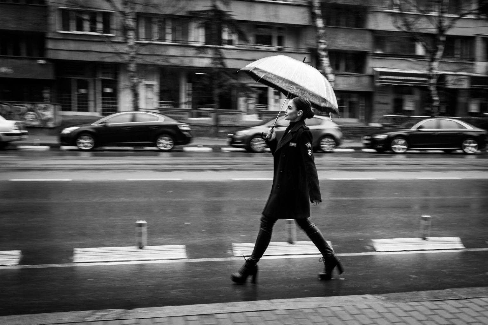
Замразяване на динамичен момент с бърза скорост на затвора и чист сензор.
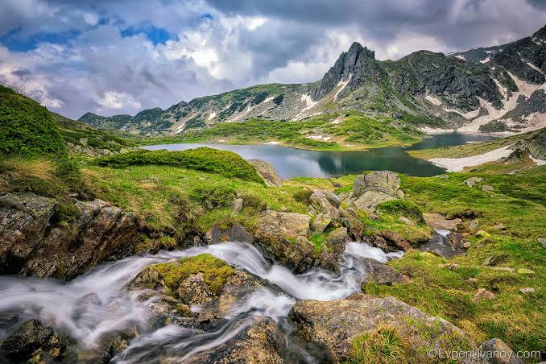
Използване на водещи линии и дълбочина на полето за максимален обем.
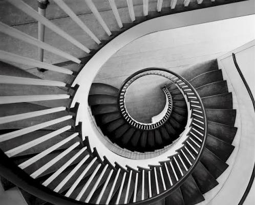
Рамкиране през елементи от околната среда за триизмерен ефект.
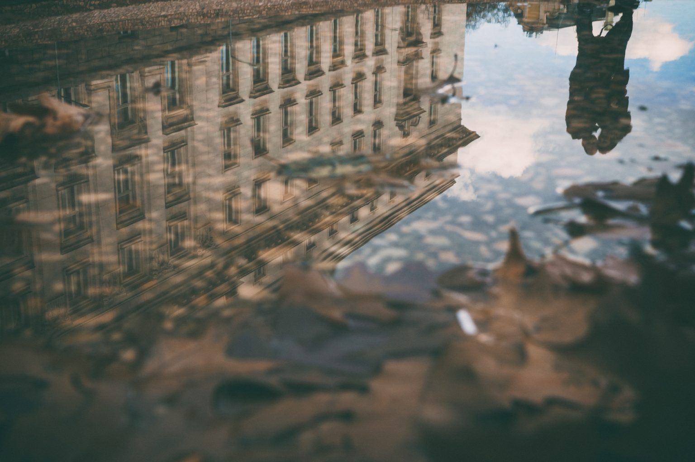
Перфектна симетрия и спокойствие, постигнати в ранните часове на деня.
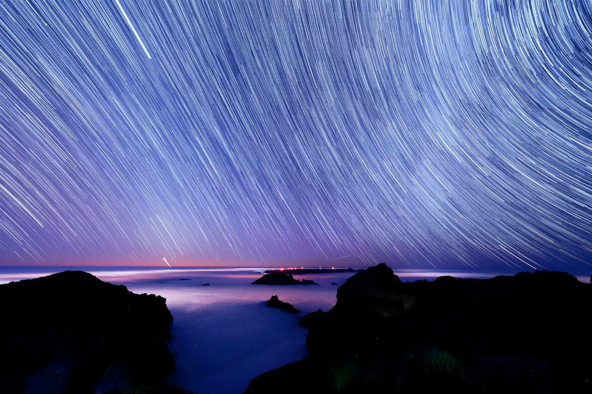
Повтарящи се мотиви, които привличат погледа и създават визуален ред.
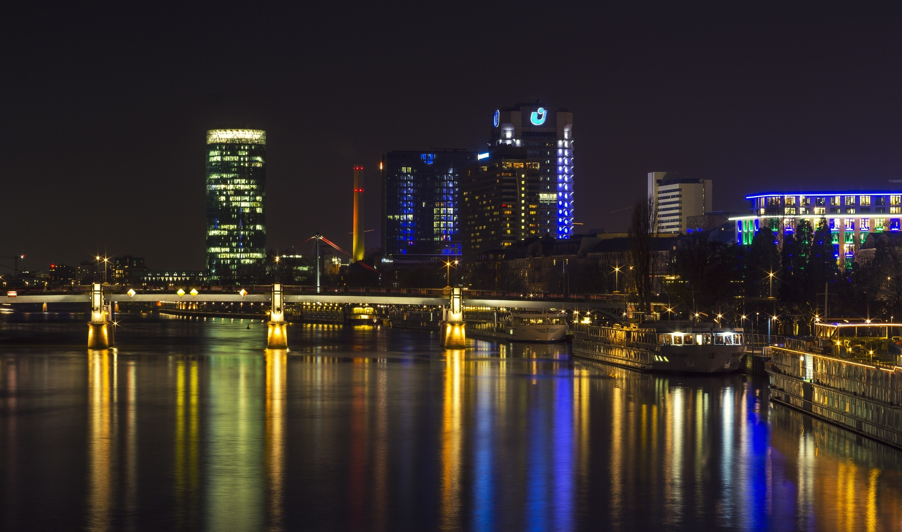
Експериментиране с по-високо ISO и дълга експозиция на тъмно.
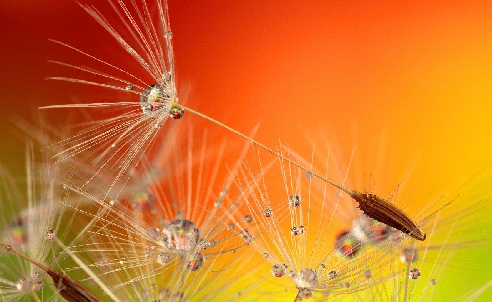
Плитък фокус и изключителен фокус върху фините текстури при близък план.
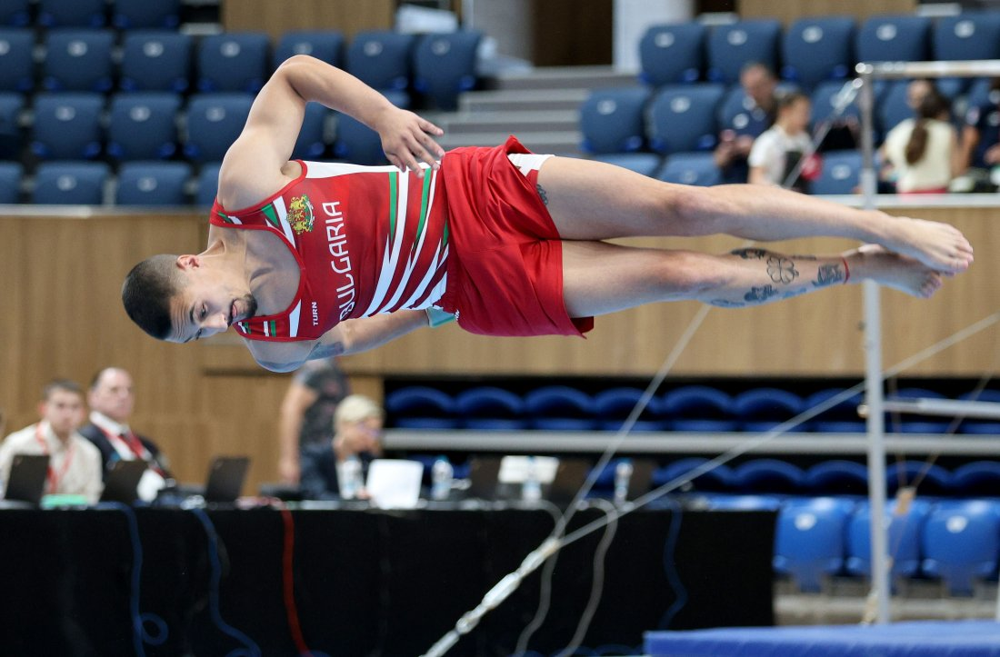
Уловен бърз жест с ултра висока скорост на затвора без никакво размазване.
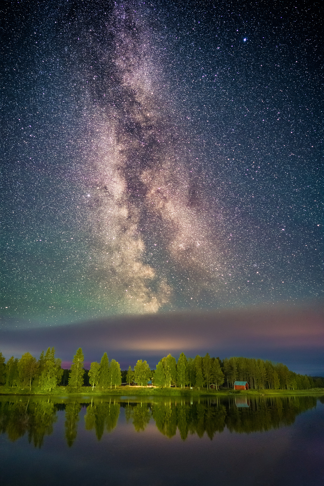
Улавяне на нощното небе с максимално отворена бленда и висока чувствителност.
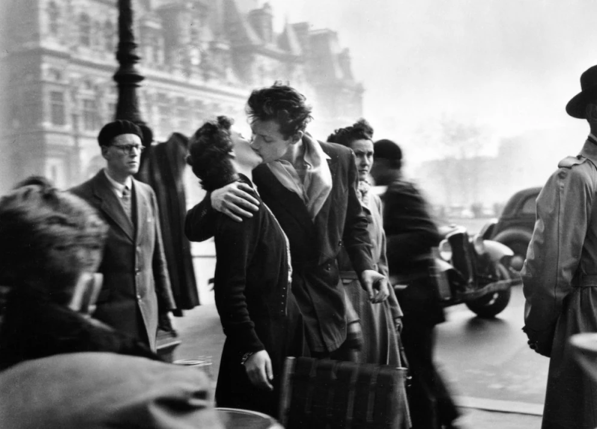
Спонтанна фотография, улавяща духа на градската среда и хората в нея.
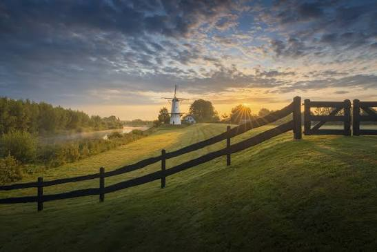
Мека, топла светлина, която подчертава релефа и естествените цветове.
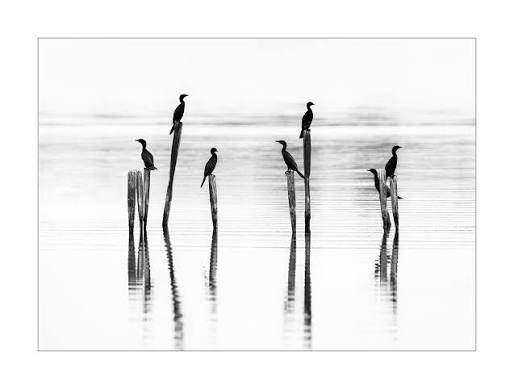
Използване на негативно пространство за извеждане на основния обект на преден план.
„Вашите първи 10 000 снимки са най-лошите ви.“